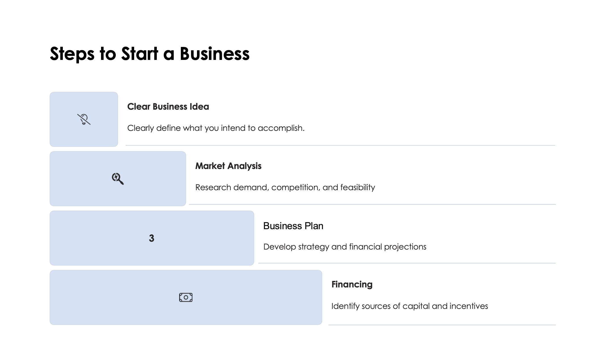
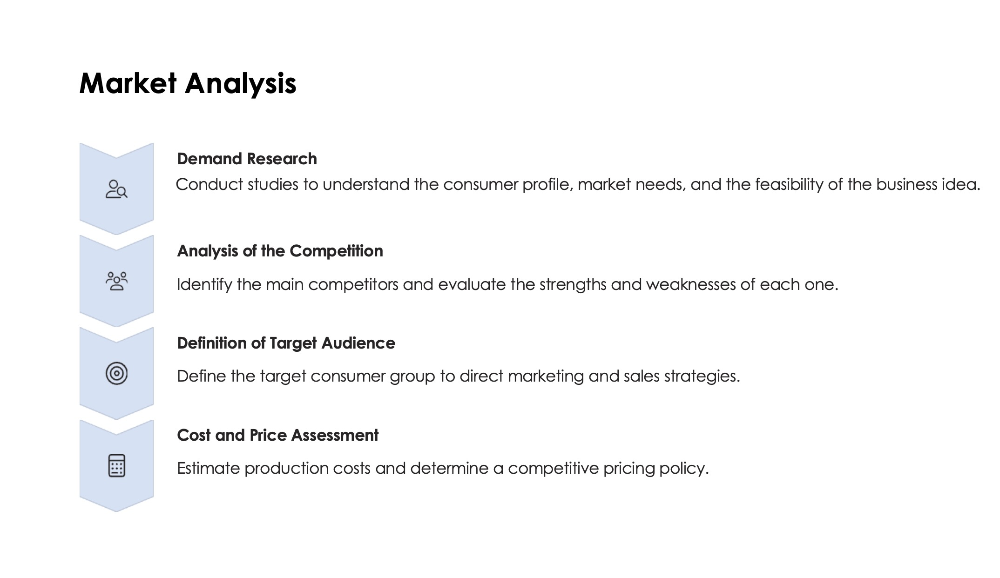
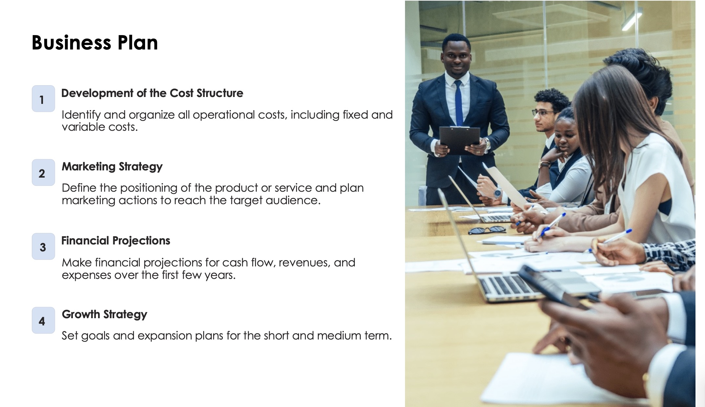
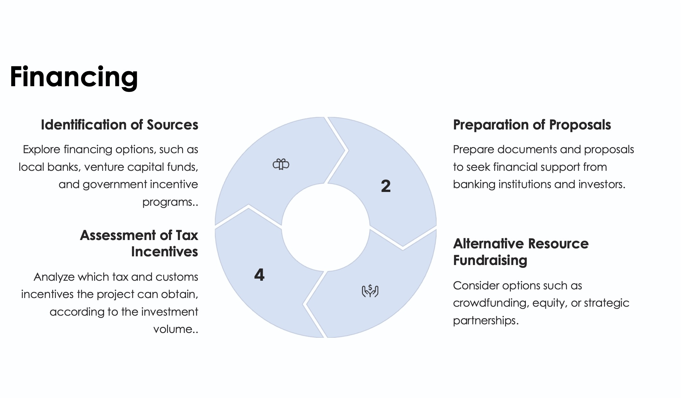
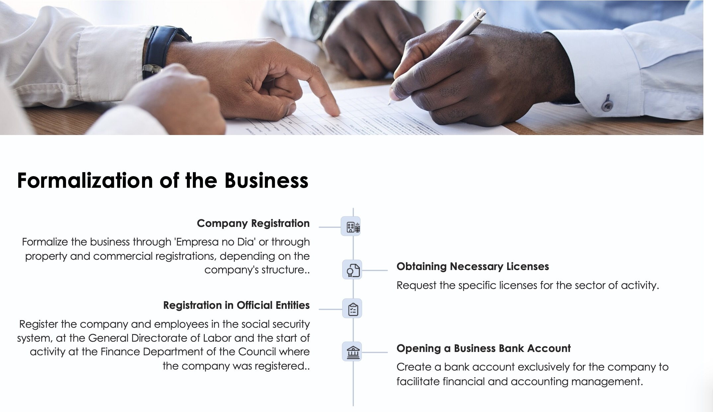
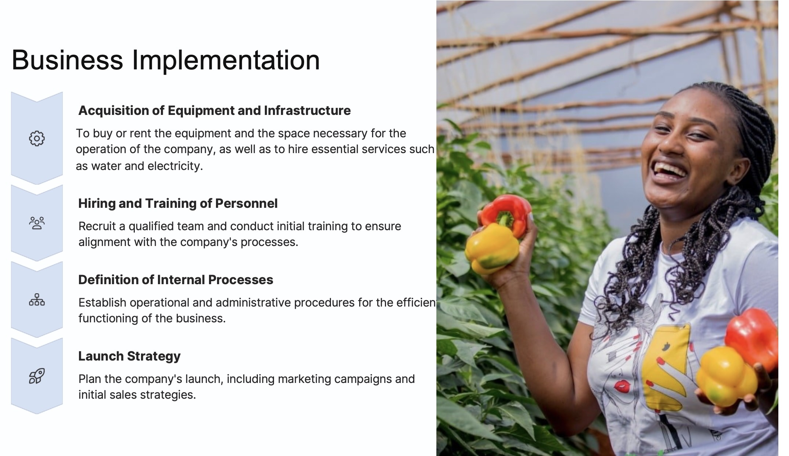
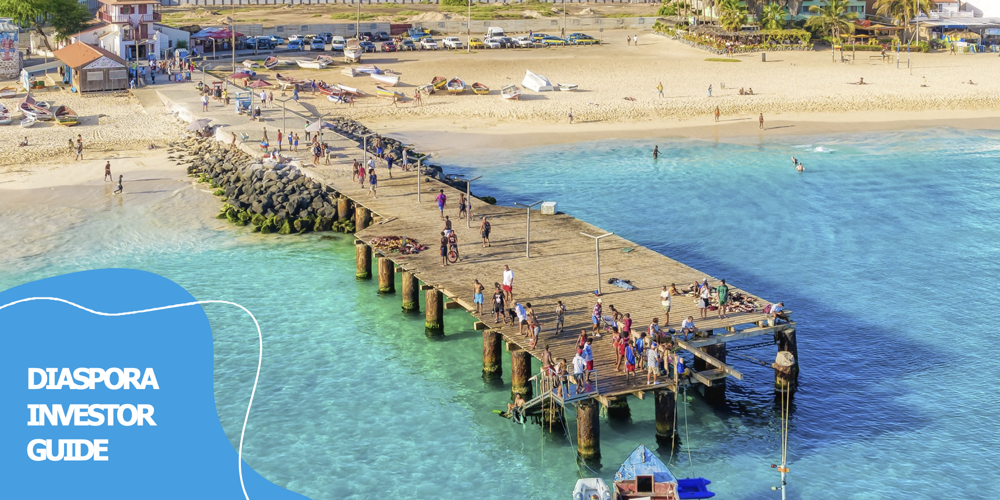

Download the Guide
Get the complete version of the "Diaspora Investor Guide" to access all detailed information, contacts, and necessary resources.
Would you like to invest in Cabo Verde? Then you're in the right place! This site presents the Diaspora Investor Guide, created to help you transform ideas into businesses. Discover investment opportunities, government incentives, and practical guidance to invest safely and contribute to sustainable development in Cabo Verde.
Download the GuideCabo Verde has an attractive and business-friendly environment with various strategic advantages that strengthen investor confidence:
Located at the crossroads of Europe, Africa, and America, Cabo Verde is a connection point for international trade and business.
The country is recognized for its consolidated democracy, social peace, and stable governance—fundamental factors for investment security.
Continuous investments in ports, airports, roads, and energy networks ensure good conditions for business development.
The national currency (Cabo-Verdean Escudo) is pegged to the Euro, providing exchange rate stability for foreign investors.
Cabo Verde has a moderate tropical climate stable throughout the year, with no recorded epidemics or significant public health risks.
Economic policies allow fund transfers and capital repatriation without restrictions, favoring international investments.
The country maintains a strong commitment to the Rule of Law, promoting a safe and predictable business environment.
Cabo Verde has a young and skilled population with increasing technical and professional qualifications, making it attractive for innovative and technological sectors.
The Diaspora Investor Status is a certification offered by the Cabo Verdean Government to recognize and facilitate investments by Cabo-Verdeans residing abroad. This status provides a series of tax, customs, and administrative benefits, allowing the diaspora to actively participate in the country's economic development and access advantageous conditions to start and expand businesses.
On the acquisition of real estate for project installation.
On financing contracts and credit operations.
On the import of goods and equipment necessary for the project.
The State covers up to 50% of training costs in the first year of activity.
Extra tax incentives may be applied to projects in areas of lower economic development, including logistical and financial support.
Explore Cabo Verde's unique opportunities, from Santo Antão to Brava. Click on the map points to discover how natural resources and economic potential can transform business visions into reality.

The microclimate, fertile soil, and water availability in various valleys in Santo Antão provide outstanding potential for agricultural production. Development of value chains for agricultural and agroindustrial products.
Expansion of trail and route offerings for tourists interested in nature.
Investments in valorizing local coffee, strengthening its international marketing.
Development of solar and wind energy projects for local supply and energy export.
Creation of fish processing and storage units for export and hospitality in Cabo Verde.
Support for cultural production, events, music, and arts to foster the island's creative sector.
The island has a strong fishing tradition with important marine resources. There is potential for investments in processing and exporting fish, including creating modern storage and packaging facilities for external markets and hospitality and restaurants in the country.
Fertile terrain in specific areas of the island allows for high-quality fruit and horticulture production. Investments in modern agricultural technologies can increase productivity and crop resilience.
The natural beauty of São Nicolau, with ecological trails and mountainous landscapes, offers opportunities for developing ecotourism and adventure tourism. Ventures promoting environmental sustainability, such as eco-lodges, have great potential.
Development of high-standard resorts, wellness spas, exclusive gastronomic experiences, and personalized activities for high-income tourists.
Expansion of services focused on kitesurfing, diving, and yacht tours, taking advantage of the island's unique natural conditions.
Creation of international-standard event and conference centers, focusing on attracting a differentiated tourism segment.
Development of large-scale resorts capable of accommodating large volumes of tourists with "all-inclusive" package offerings.
Creation of attractions such as water parks, cultural centers, and interactive experiences that diversify the tourism offering and attract families.
Organization of major events, music festivals, and sports competitions that utilize the island's infrastructure and natural resources.
Solar and wind energy projects, taking advantage of the island's natural resources.
Development of eco-lodges and nature tourism experiences.
Modernization of fishing practices and creation of processing units for the domestic market, with special interest for the hotel market, as well as export.
Santiago is an island with fertile soil and a large population, ideal for investments in agriculture and transformation of horticultural and fruit products.
With strong historical and cultural heritage, Santiago offers opportunities in developing cultural and rural tourism.
Santiago island, as Cabo Verde's administrative and economic center, presents vast potential for developing the Information and Communication Technology (ICT) sector. The capital, Praia, through the Tech Park and various science and technology faculties, is the strategic hub for implementing technological solutions that can drive the country's digitalization and the emerging West African region.
Opportunities in creating infrastructure and tour packages focused on adventure tourism and volcano exploration.
Expansion of high-quality local wine production, with potential for export and development of wine tourism (enotourism).
Development of value chains for agricultural products adapted to volcanic soil, such as coffee and tropical fruits, focusing on export and supplying the hospitality sector.
Development of agricultural crops adapted to the local climate, focusing on export and food security.
Investments in ecotourism and sustainable accommodations to explore the island's natural potential.
Creation of nurseries for cultivating exotic and medicinal plants for local and international markets.
The investment process in Cabo Verde is structured to be transparent and secure. Scroll to see the steps and consult the available resources to ensure your project's success.






Guided by the values of integrity, the goal of the following guiding principles for valuing people, work, and businesses is to adopt a common line on measures and initiatives aimed at improving the value of investments in Cabo Verde
Learn about the enormous potential of the Private Sector's contribution to achieving the UN's 2030 Agenda

"You need to plan, have a lot of willpower, determination, courage, and go 'all in'. What drives us is the love for this land that makes us face its challenges."
"I created a company in 2010 that today is the largest Cabo Verdean company in the technology sector and employs more than 20 people directly and 50-60 indirectly. We have enormous growth potential since we operate in the country's infrastructure area. The driving force behind the businesses we created was the desire to help develop the country where I was born."
"I encourage everyone to invest in the country because of the existing potential and the wide range of opportunities. I encourage them to do the groundwork, talk to people, and identify opportunities."
Essential public institutions to facilitate diaspora investment in Cabo Verde, offering specialized services and institutional support.
Click for more information
Mission: Regulation and support to various economic sectors through General Directorates and Public Institutes.
Chambers: www.ccb.cv | www.ccs.cv
Click for more information
Mission: Facilitate and accredit diaspora investment in Cabo Verde, promoting the integration of investors abroad.
Website: www.mdc.gov.cv

Click for more information
Mission: A place to connect Cabo Verde with its community worldwide.
Boston, Lisbon, Praia, Santa Catarina, Tarrafal, Maio, and other municipalities.
Website: www.investidordadiaspora.cv

Click for more information
Mission: Coordinate the investment process, reception, analysis, and contracting of projects.
Website: www.cvtradeinvest.com
Click for more information
Mission: Support the creation and development of small and medium enterprises.
Website: www.proempresa.cv
Click for more information
Mission: Provide venture capital solutions for innovative projects.
Website: www.procapital.cv
Get the complete version of the "Diaspora Investor Guide" to access all detailed information, contacts, and necessary resources.
